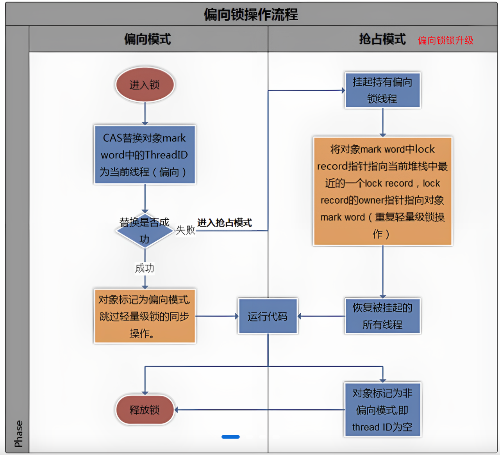
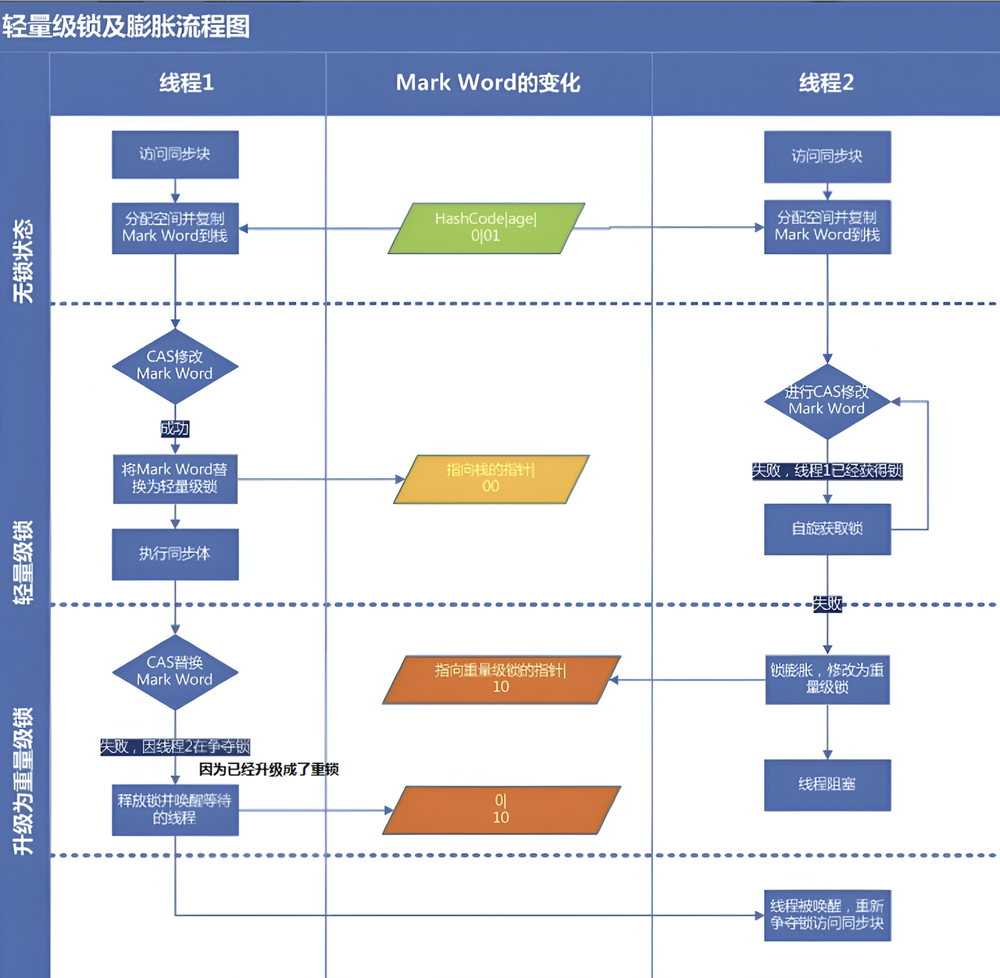
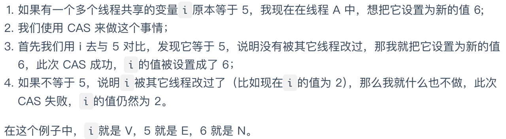
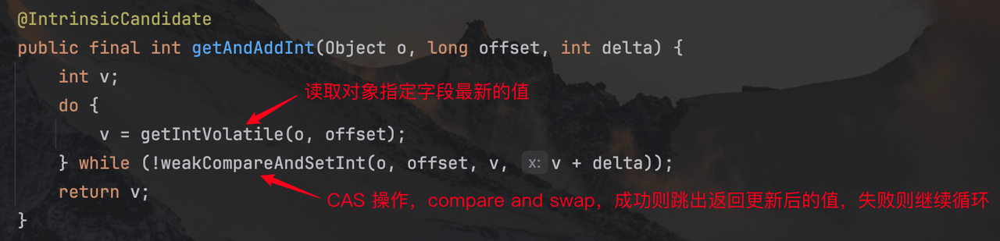
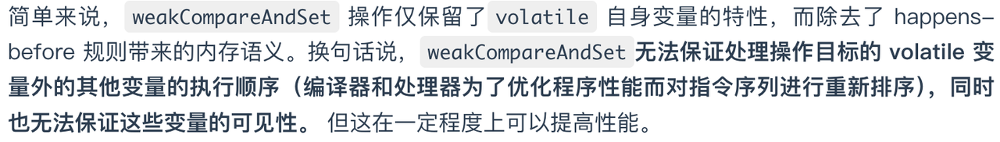
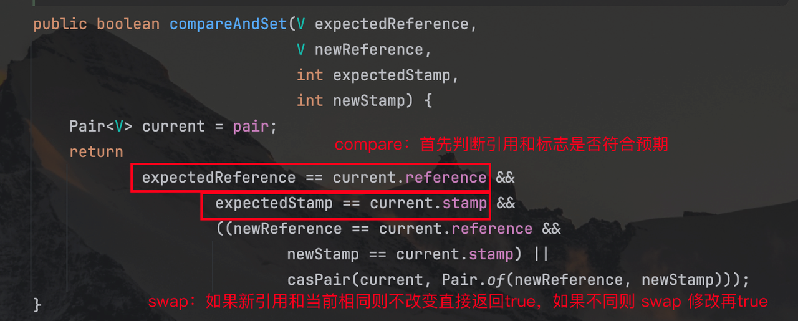

volatile和synchronized关键字
之所以把 volatile 和 synchronized 放在一起是因为二者都是关键字，而 synchronized 相比 volatile 除了提供内存可见性外还提供了锁的作用，也就是在同一时刻只允许一个线程访问共享资源，保证了线程安全性。
volatile关键字
当使用 volatile 关键字修饰一个变量，Java 内存模型会插入一个内存屏障，确保执行到 volatile 变量的时候前面的语句全都执行完，后面的语句全都没有执行， 且前面的语句对 volatile 变量及后面的语句是可见的。
volatile 可以保证可见性，但不保证原子性：
当写一个 volatile 变量时，JMM 会把该线程在本地内存中的变量强制刷新到主内存中去；
这个写操作会导致其他线程中的 volatile 变量缓存无效（修改对其他线程立即可见）。
保证可见性：
1 | class ReorderExample { |
无法保证原子性，因为inc++本身不是一个原子操作：
1 | public class volatileTest { |
解决可见性的同时解决原子性（后面会学）：
① synchronized 关键字； ② 重入锁 ReentrantLock； ③ 原子类 AtomicInteger。
单例模式的双重锁
单例模式的双重锁
1 | public class Penguin { |
因为m_penguin = new Penguin();并不是一个原子操作，分为三个子步骤：
为 Penguin 对象分配内存
将对象赋值给引用 m_penguin
调用构造方法初始化成员变量
所以为了防止 JVM 对三个子步骤重排序，使用 volatile 关键字。
synchronized关键字
synchronized
synchronized 的两大作用：
在同一个时刻只有一个线程可以执行某个方法或某个代码块（存在共享数据的操作）；
保证一个线程的变化（共享数据的变化）立即被其他线程所见，实现可见性（完全代替 volatile 关键字）。
三种应用方式
- synchronized 同步方法
为当前对象 (this) 加锁，进入同步代码前要获取当前对象的锁。
当创建两个对象时，虽然有同步方法，但是由于两个对象存在两个不同的对象锁，因为 t1 和 t2 使用的是不同的锁，无法保证线程安全。
1 | // new 两个新实例 |
为了解决这种情况，也就是让对象锁唯一，只能将 synchronized 将静态方法同步。
- synchronized 同步静态方法
为当前类的 Class 对象加锁（不属于某个对象，且 Class 类锁和 实例对象锁互不影响）。
- synchronized 同步代码块
有时候编写的方法代码量很大，而需要同步的代码块只有一小部分，将方法同步大题小做，所以只需对需要同步的代码块执行同步。
将 synchronized 作用于调用的实例对象 this，this 就是锁的对象，当线程进入同步代码块时就会要求当前线程持有实例对象的锁。
1 | public class CodeBlock implements Runnable { |
synchronized 中的 happens-before 规则
1 | class MonitorExample { |

synchronized 会防止临界区内的代码和外部代码发生重排序，writer 和 reader 之间存在 happens-before 关系，保证了执行顺序和内存可见性。
synchronized 属于可重入锁
在线程中首先通过同步代码块获取了 this 实例对象锁，然后调用的increase()方法获取的对象锁也是 this，由于 synchronized 的可重入性，两个获取锁请求临界资源都会成功。
1 |
|
synchronized 关键字加在静态方法上，等价于通过同步代码块获取 this.getClass()对象。
锁状态
Java 6 之后引入了偏向锁和轻量级锁，之前的锁都是重量级锁。
偏向锁
大多数情况下锁不仅不存在多线程竞争，而总是由同一线程多次获得。
偏向锁在没有资源竞争（该锁没有被其他线程访问）的前提下消除了同步语句，极大提升了程序的运行性能。
实现原理
Java 对象的对象头的第一个字宽，Mark Word：储存对象的 hashCode 和锁信息。
一个线程第一次进入同步块时，会在对象头和栈帧的锁记录里存储锁的偏向线程 ID，当下次线程进入这个同步块时，会检查锁的 Mark Word 里是否存放的自己的线程 ID。
如果不是，则说明有其他的线程来竞争偏向锁，这时候如果原先的线程不存在了，会将 Mark Word 中的线程 ID 改为当前线程；如果原先的线程仍然存在，则暂停原先的线程，偏向锁升级为轻量级锁进行锁竞争。

撤销偏向锁
等到线程竞争才释放锁。当偏向锁升级为轻量级锁时，要暂停偏向锁的线程，重置偏向锁标识，这个过程的开销很大：
如果程序里的锁通常处于竞争状态，那么偏向锁不是一个好的选择。
轻量级锁
多个线程在不同时段获取同一把锁，不存在锁竞争的情况，也就没有线程阻塞。
JVM 为每个线程在当前线程的栈帧中创建存储锁记录的空间，Displayed Mark Word。如果一个线程获取锁时发现是轻量级锁，会将锁的 Mark Word 复制到自己的 Displayed Mark Word 里面（存的是未改变前的 Mark Word 的副本）。
工作原理
当一个线程要获取锁时，它会复制对象的 Mark Word 到自己线程的栈中，并通过 CAS 操作尝试修改对象头的 Mark Word。如果成功，表示该线程获取了锁；如果失败，表示另一个线程已经持有了该锁，当前线程就尝试自旋来获取锁，如果自旋失败那么这个线程就会阻塞，同时锁升级为重量级锁。
自旋：一般通过循环消耗 CPU 时间，不断尝试获取锁。
轻量级锁的释放
当前线程会使用 CAS 将 Displayed Mark Word 的内容副本复制回锁的 Mark Word 中，如果没有竞争则复制会成功；如果有其他线程因为自旋失败而导致轻量级锁被升级为重量级锁，复制会失败，此时会释放锁并唤醒被阻塞的线程。

重量级锁
重量级锁依赖于操作系统的互斥锁（mutex，用于保证任何给定时间内，只有一个线程可以执行某一段特定的代码段） 实现，而操作系统中线程间状态的转换需要相对较长的时间，所以重量级锁效率很低，但被阻塞的线程不会消耗 CPU。
当调用一个锁对象的
wait或notify方法时，如当前锁的状态是偏向锁或轻量级锁则会先膨胀成重量级锁。
锁的升级流程
每个线程在准备获取共享资源时，
检查 Mark Word 里面是否放了自己的线程 ID，如果有则当前线程持有偏向锁；
如果 Mark Word 里面没有自己的线程 ID，锁升级，并通过 Mark Word 里面的线程 ID 通知持有偏向锁的线程暂停，之前线程将 Mark Word 中线程 ID 置空（准备升级为轻量级锁）；
两个线程都把锁对象的 HashCode 复制到自己的 Displayed Mark Word 中，然后通过 CAS 操作将锁对象的 Mark Word 内容修改为自己的 Displayed Mark Word 地址的方式来竞争轻量级锁；
成功的执行 CAS 获取轻量级锁，失败的进入自旋；
自旋线程在自旋中成功获取锁——之前持有锁的线程执行完成并释放了共享资源，则整个线程仍处于轻量级锁状态，如果自旋失败则升级为重量级锁；
自旋的线程进行阻塞，等待之前持有轻量级锁的线程完成锁释放并唤醒自己。
重量级锁：当另外一个线程执行到同步块的时候，由于它没有对应 monitor 的所有权，就会被阻塞，此时控制权只能交给操作系统，由操作系统来负责线程间的调度和线程的状态变更，造成频繁的上下文切换。
轻量级锁：如果 CPU 通过 CAS 就能处理好加锁、释放锁，这样就不会有上下文的切换。
偏向锁：大多数情况下，锁不仅不存在多线程竞争，而且总是由同一个线程多次获得，同一个线程反复获取锁，如果还按照 CAS 的方式获取锁，也是有一定代价的。
不同场景下的锁策略
偏向锁：无竞争的情况下，只有一个线程进入临界区，采用偏向锁
轻量级锁：多个线程可以交替进入临界区，采用轻量级锁
重量级锁：多线程同时进入临界区，交给操作系统互斥量来处理
CAS
悲观锁：认为每次访问共享资源时会发生冲突，所以必须对每次数据操作加锁，以保证临界区的程序同一时间只有一个线程在执行。
乐观锁：认为对共享资源的访问没有冲突，无需加锁也无需等待，一旦线程之间发生冲突，通过 CAS 保证线程执行的安全性。
CAS 有三个值：① V 要更新的变量(var)；② E 预期值(expected)；③ N 新值(new)。
CAS 意为 compare and swap，比较并交换，判断 V 是否等于 E，如果是则将 V 更新为 N，如果不是则说明已经有其他线程更新了 V，当前线程放弃更新。

CAS 原理
Java 中 Unsafe 类中的 native 方法交给底层 JVM 使用 C 语言或 C++ 来实现 。对 CAS 的实现是通过 C++ 实现的，它的具体实现和操作系统、CPU 都有关系。
CAS 的原子性
CAS 是一条 CPU 的原子指令，从 CPU 层面保证了它的原子性。当多个线程同时使用 CAS 操作一个变量只有一个胜出，其余都会失败（失败的线程并不会被挂起，仅是被告知失败，并且允许再次尝试，当然也允许失败的线程放弃操作）。
以 AtomicInteger 类的getAndAdd(int delta)方法为例，AtomicInteger 类的方法是调用 Unsafe 类的方法实现的：


CAS 的三大问题
ABA 问题
就是一个值原来是 A，变成了 B，又变回了 A，实际上的值更新了两次，但是 CAS 检测不出来。
ABA 问题的解决思路是在变量前面追加上版本号或者时间戳。


长时间自旋
CAS 不成功会进行自旋，如果自旋长时间不成功会占用大量的 CPU 资源。
解决思路是让 JVM 支持处理器提供的 pause 指令。
多个共享变量的原子操作
当对一个共享变量执行操作时，CAS 能够保证该变量的原子性。但是对于多个共享变量，CAS 就无法保证操作的原子性。
解决方案通常有两种：
- 使用 AtomicReference 类保证对象之间的原子性，把多个变量放到一个对象里面进行 CAS 操作；
- 使用锁，锁内的临界区代码可以保证只有当前线程能操作。